AHC063参加記
背景
背景というほどでもないですね。出たから書きます。書きかけのAHCが多いので今回は書きながらやってみます。吉と出るか凶と出るか。
勝って笑えてるといいね。
内容
day1
問題文を読みました。問題はこちらです。
変則的な蛇ゲームです。大体の蛇ゲームは自身の体に接触するとゲームオーバーですが今回は嚙み千切るそうです。 閉じ込められる心配はないですがその分選択肢が増えて大変です。
また、噛み千切ると蛇の体の残りが餌となって散らばるそうです。うまいタイミングで噛み千切ってスコアを伸ばしてねってことでしょうか。
点数の様子を見ます。
得点
出力した操作列の長さを T、操作完了時点における蛇の長さを k、蛇の色列を c0 ,⋯,ck-1 とする。 ここで、 k は M 未満であってもよい。 また、誤差 E を、 cp≠dp であるような p=0,⋯,k−1 の個数と定義する。 このとき、以下の絶対スコアが得られる。
T+10000×(E+2(M−k))
絶対スコアは小さいほど良い。
Tの最大値は1e5、誤差は1、長さが足りないものは2として、さらに1e4倍されてスコアに加算されます。 余りターンをかけすぎると誤差をなくしてもお得ではなくなってしまうそうです。
制約も見なくてはいけません。
盤面の大きさNが8~16
長さMは盤面の1/4 ~ 3/4
色数Cは3 ~ 7
エサはM-5個
もともと体長が5なのでその分の餌がないということですね。
それ以外は特に読み取れません。なんもわからないですね。
では考察に入ります。
とりあえず色があってなくてもくっつけた方がお得なので頭に入れておきましょう。
足りない長さ1当たり2e4、間違ってる色当たり1e4なので間違ってた方がお得です。 ついでに展開もしておきましょう。
T + 10000×E + 20000×M − 20000×k
第3項の20000×Mは定数です。で、体を余らせる意味もないので全部くっつけることにしましょう。
1つの餌を見捨てて3つの位置が合う、みたいなことになれば捨てるのもありですが、そんな器用な計算はできないと思います。
嚙み千切る挙動も考えます。

最小のループを考えると蛇の体は5以下にならないことがわかります。まぁこれは制約からわかります。
で、嚙み千切られて餌になったc5と頭であるc0の位置関係を確認すると、噛み千切られたからだと頭が隣接していることがわかります。つまりちぎられた体はそのままたどることで簡単に復元できるということになります。
これはうまく使いたいです。……使えるといいね。
それはそれとして短い状態でせっせこ端っこの方に欲しい色をためていくことはできそうです。
ということは下の図のように餌をため込んで最後にまとめて食べるということは可能そうです。
Nは十分な大きさがあるので端2マスをあけておいても十分な隙間は保持できます。ぱっと見の印象で全部の色を揃えるのは無理だと思ってましたが意外といけそうです。安心しました。

とりあえずこの方針を詰めましょう。
赤丸を付けたマスに欲しい色を置くには6の字を作ればよいです。この状態で噛み千切って下に脱出すれば欲しい色を置くことが可能です。
すこし上のマスはもう指定の色を置いているので立ち入らないこととします。6の字を作る場合影響はありません。水平に入ってくればいいので。

これはもう少し長くすることもできそうです。
下の図の様にすることでc5~c8を置きたい場所に置くことができます。工夫することで大分好き勝手おけそうなことがわかりました。

Mの問題を解くのは無理っぽいですが、2とか4なら簡単にできそうな気がします。
ただ問題なのは置く長さによってc5以降に置くべき色が変わるのは厄介です。とりあえず2ずつ置いてみるパターンを作りましょう。
スコアの見積もりもしておきましょう。指定した色2つをC5、C6に置くのにかかる手数は無視、盤面を移動するのに行くって帰るのに4Nかかるとします。 これをM/2回、最悪の場合3/4N^2繰り返せばいいので、最悪でも3N^3くらいです。Nは16までなので大体4*(2^4)^3=2^14。適当に最大長を作ってエラーが1だった場合のスコアが1e4なので大分勝てます。適当解より大分強いので満足です。
現在時刻は23時過ぎ、実装に入ります。
……全然実装イメージがわかなかったので遊んでました。
とりあえず各マスに置くべき色は出せているのでこれを利用して手動でやってみました。
理屈は悪くないと思います。あとはこれが実現可能かどうかだけです。１週間でできるのかしら？

4/04の1:00頃の成績です自明解を改良しただけでこれだけ取れたのでまだ強い解を出している人が少なそう。 気落ちしなくていいね。 提出はこちら。

day2
実装をしてましたが、あまり発想が振るわず、実現方法が確定せず。
とりあえずおきたい色をt1,t2として、この2つを回収して左上のピンクの丸に行きたいなと思いました。とりあえずt1から始めて他の色を踏まずにt2に到達できるパターンを探してあげようと思います。
……これがない場合もあると思うので１つだけ運搬する方法も考えないとなりません。
もう1つ気づいてしまいましたが、N=8の時に下2つを開けた状態で75%の最大のMを引いてしまうと大分パンパンになります。1つだけ運搬する方法も思いついているので1つずつ移動する方向で実装した方がいいかもしれません。頭がパンクしそう。

4/04の24:00頃の成績です。新しく提出はしてませんが200位程度で耐えてます。色を全部揃えきる実装をしている人は少なそう。

実装が行き詰ったのでまたビジュアライザで遊んでました。
体をたどると復元できるので、復元の最後を欲しい色の隣に置くことで一致している色の長さを+1できることに気が付きました。
これもうまい操作が必要ですが頭に入れておきましょう。体が長くなってきたときに欲しい色が全部体内にあるときとか非常に困りそう。
あとは欲しい色の隣に最後の一致を置くときに通るべき道を探すコストも高そう。上端から下端まで埋めて次の移動ができません、とかは困る。

これを踏まえるとまだ前者のほうが簡単だと思います。実装からは逃げられなかった……。実装を頑張りましょう。
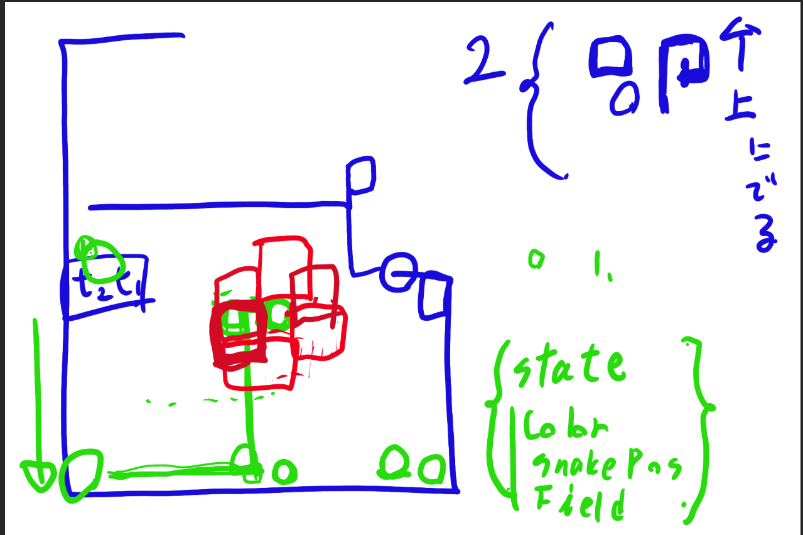
移動がややこしくなるとめんどくさいのでとりあえず一番下まで降りて欲しい色を回収するようにしました。
ターゲット色の位置によってグルグルしてカットできる場所が変わるのでこの辺は場合分けが必要そうです。
とりあえず動かせそうかマニュアルでやってみました。

やっぱり欲しい色が全部体に入ってしまうことがあります。困るので取り出すための処理が必要そうです。
あとは逆で取得した場合は逆向きに6を作ることも可能なことを忘れてはいけません。
day3
下2列開けて場がいっぱいになるのは8×8だけだと思ってましたが勘違いでした。
下は13×13の場合です。右端にできるスペースは縦1で、このスペースの上の方、例えば赤の場所に餌が残ってるとめちゃくちゃ困ります。
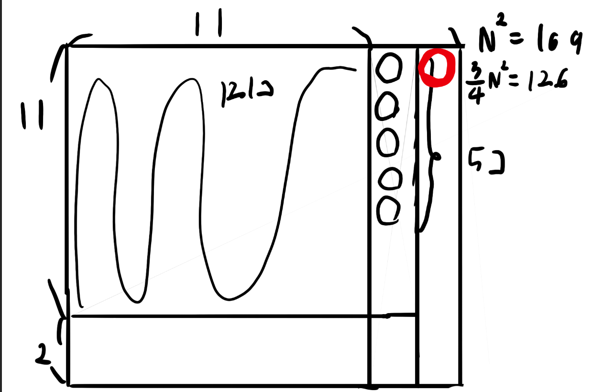
しかもよくよく考えると詰め切れない場合、下図のように片側だけ詰めるみたいなことが起こります。上に向かう途中で途切れるのが非常に困ります。上の方からパンパンに詰めていきたい。
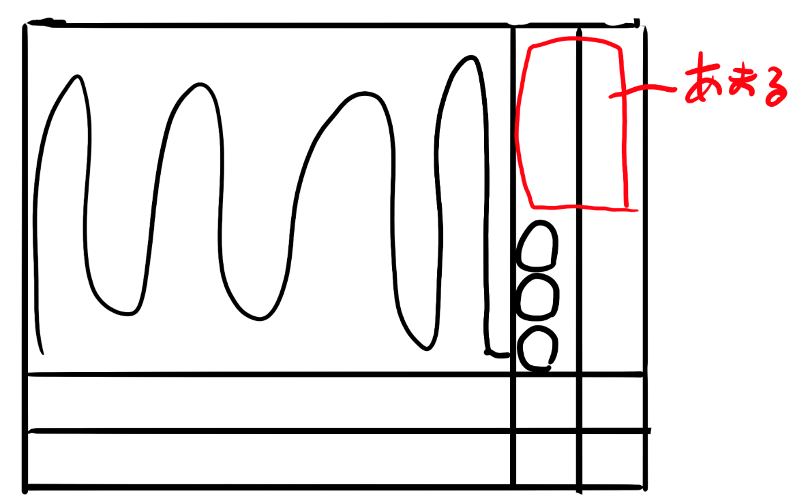
詰め方を変えましょう。右上を末尾としてグネグネ配置します。こうすると下２列は余るので始点がどこであってもうまく対応できそうです。
ただこれだと困るのは2つずつ詰めようとするとNが奇数の時に余りが発生します。まぁこれはうまいことやれば詰め込めます。
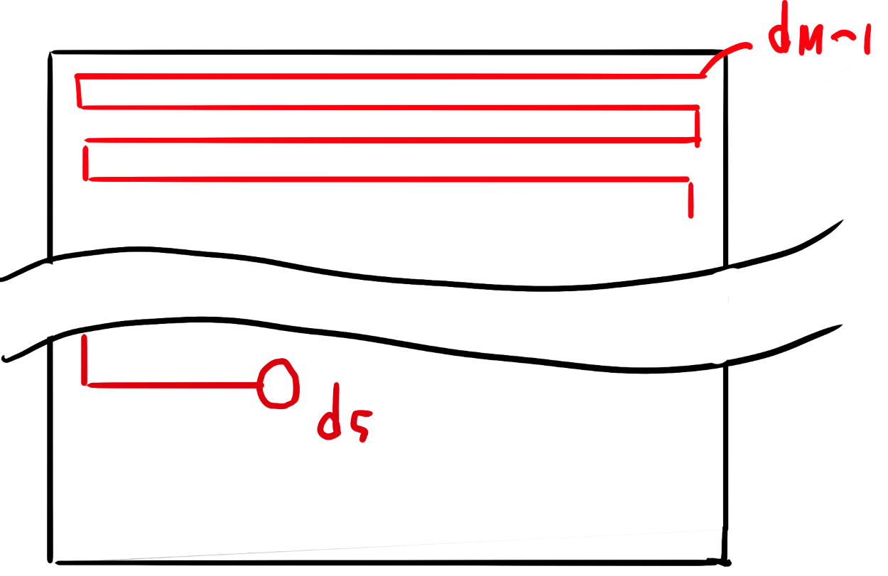
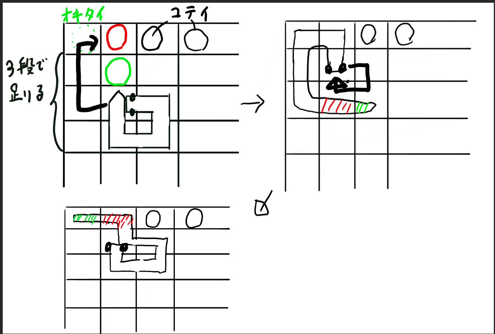
まぁこんなことしなくても3個まとめておけばいいだけですが。 今はまだ2つずつ置くことすら実装できてません。 てか早く1つずつでもいいので実装したいね。
大分やりたいことが整理されてきました。これでやっとちゃんと実装できるかも…
はい、トラップがありました。最後じゃなくて、１つ手前も困ります。同じ置き方をしようとすると無理です。左から置いてあげないとなりません。
gifは当然ながら手動操作です。が、今度こそ整理できたように見えます。欲しい色が確定した行の1つしたのときの挙動に注意すればいいかも？
あとは固定するのは１つにしても、まとめて運んで次に取りやすくするとか、逆からも埋めるようにするとかがあるとなお良しってところでしょうか。 まぁこの辺は発展課題。最低限動くものを作らないと改善も何もないから……、実装から逃げるな……。

実装が進みました。欲しい色が今いる位置から3つ以上離れている場合はうまく持ってこれるようになりました。 指定の色を6番目として取得するために手前でグルグルして帳尻を合わせるために3つ以上離れているときだけ動きます。 2つ以下の場合は上下でグルグルしてあげようと思ってますが、バグってうまく動きません。
が、ある程度動くようになりました。よかったね。
上部に集めるように計画してましたが、スタートが左端なので初動を吸収しやすくするために縦に並べるようにしました。実装しないと見えてこないこともあるよね。

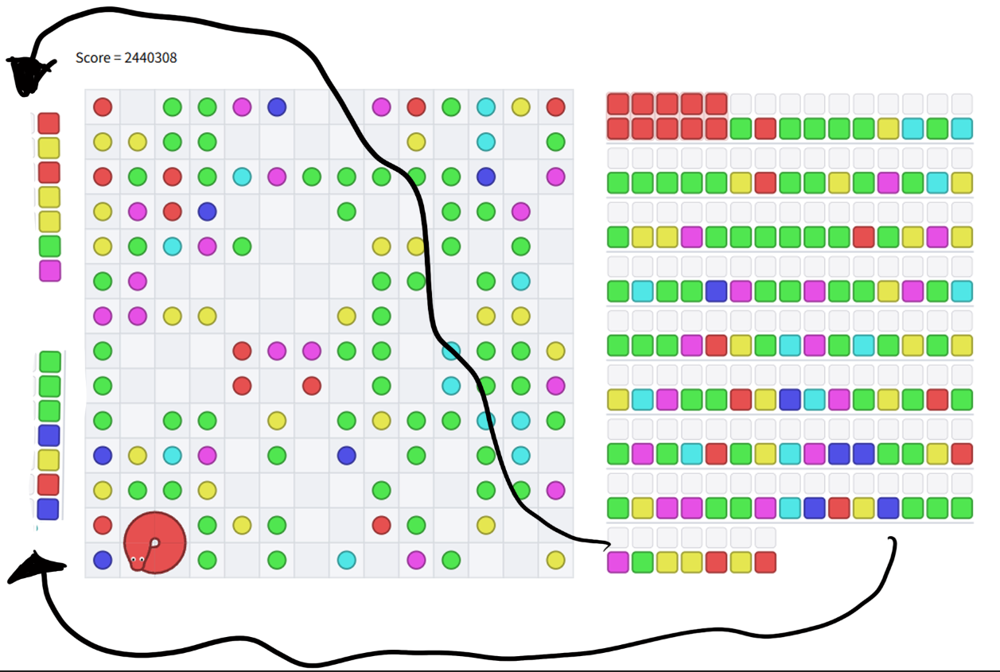
何にせよ、これは手動じゃなくちゃんとプログラムで動いてます。光明が見えてきました。
……ただ休日が終わってしまいました。平日にこれの実装を進められるのかしら。まとめて埋める処理も作りたいし、時間も能力も足りない。
4/5 23:40の成績です。まだ提出は増えず。 順位は大分落ちてきましたね。そろそろ急がないといけない。
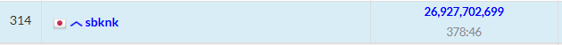
day4
実装がすすまない。というより、条件が複雑すぎてパンクしそうなのでさらなる簡略化を計ります。
現状下から2番目の扱いがめんどくさいことになってます。説明するのもめんどくさくくらいめんどくさいので割愛します。
場合分けが必要なパターンが2つあるのが悪いので簡略化したい。
下向きで上から埋めていくのが悪いので、上向きで上から埋めていくことにしましょう。
イメージは次の感じです。せっかくプログラムで動いてたのにまた手動に戻ってきちゃった。

こうすると何がうれしいかというと一番下だけ行動が変わって、それ以外は同じ動きで達成できます。素晴らしい。
しかも噛み千切った後の体が確定したい列に残らないのもポイントが高い。さらにさらに、噛み千切るときに6番目、7番目が上から順に並ぶので色をいっぱい置くように改修もしやすそうです。
なぜこうしてなかったのか不思議なレベルです。
ここまでの実装の大半がおしゃかになりましたが、完成しないよりかマシです。引き続き実装を頑張りましょう。
……実は実装がそんなに好きじゃないかもしれない。記事を書きながらやっているから気分が違うのか、単純に実装が重すぎて嫌なのかはわかりませんが。
day5
できた！！！！

たまに無限ループが発生するので修正を重ねます。
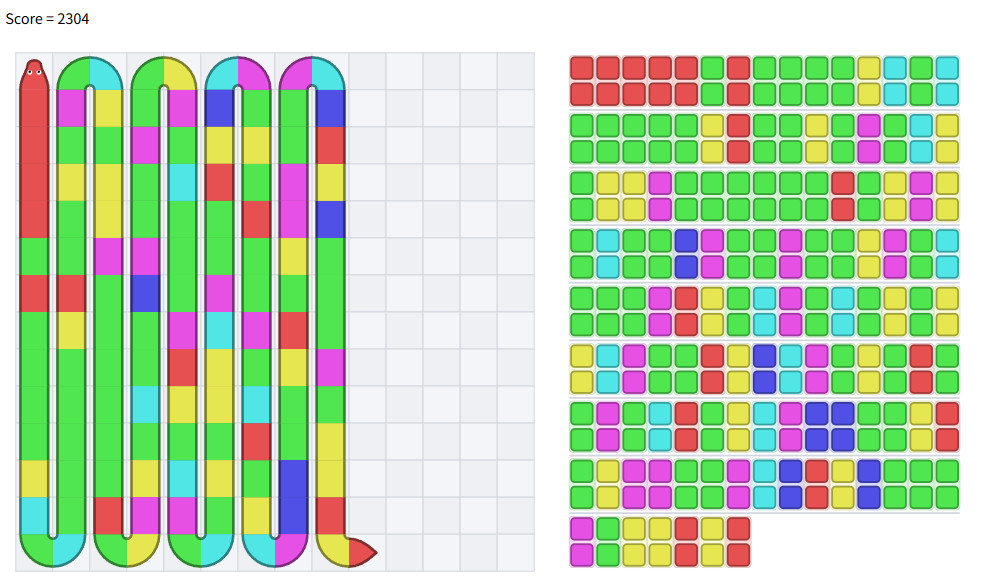
seed2も行けました。でもseed3でバグってます……。一生バグってるな……。まぁ光は見えているので頑張りましょう。
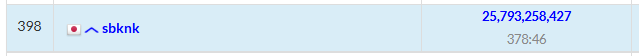
さすがに初日の提出では苦しくなってきましたね。上下左右数パターン試すみたいなことをすれば伸ばせますが、全部揃えた方が強いので却下。
day6
最初の100個のサンプルを通せたので出しました。提出はこちらです
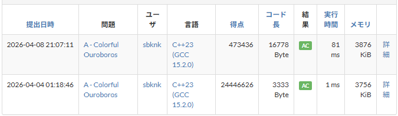
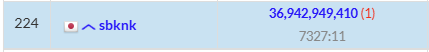
桁も違うしちゃんと動いてそうですね。まぁたまに動いてないのがあっても気づけないのでリファクタすることを考えてテストコードは書いた方がよさそうです。 長期は時間に余裕があるのでテストコードを書いて動いた方がトータルお得になりそうな気もします。
実行時間にも余裕があります。各色を置くときの手法を10個くらい持っておいて、ビームサーチをしてみてもいいかもしれません。
今回、上では触れてきていませんが、Huristicにおいて初めてstateを作成しました。
struct State {
// 現在の場の状態
vector> field;
// 確定したマス
vector> fixed;
// 蛇の座標deque
deque snakePos;
// 先頭からの色のリスト
vector colorList;
// 移動リスト
vector dirs;
};
このステートを食わせればいいだけなのでビームサーチの状態管理もラクちんです。実装してみましょう。
現状最短距離を返すだけなのでこれを複数返せるようにします。
とりあえず各状態に対して10個ずつ調べるようにします。
ここで状態は、(y,x)まで埋めているときの手数がmの時を1つの状態とします。場の状態を考えるのが適切ですが、そんな器用なことはできません。
提出コードはこちら。結果は次の通りです。
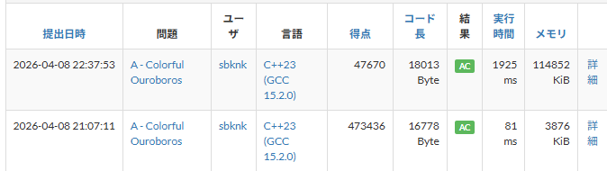
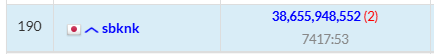
驚きポイントが２つあります。
まず１つ目、なんと桁が変わりました。バグが残ってたのかもしれません。早くテストを書かないといけない。
2つ目、priority_queueから取り出して状態判断を行っているstateは10個しかないので実行時間も大体10倍だと思ってました。が、なんと20倍近くになっています。どこで時間を食っているのかを見つけないといけません。queueにも精々100個くらいしか入らない想定だったのでここで時間を食うとも思えないんですよね……、悪いのどこだろ……、
2つ目がバグってる可能性があるせいで素直にビームサーチの結果を比較できませんが、seed0に関しては380->238となりました。大分効いているのは確かです。
NとMごとに整理して表を作るのを忘れてはいけません。前回の長期(AHC061)で特定の条件下だけぼろぼろだったので種類ごとの分類は必須です。 まだ整理してませんが、大体MはNの2乗に比例し、一回当たりの手数は行って帰ってくるので多く見積もって4NなのでNに比例とすると、手数はN^3に比して増加しているのではないでしょうか。
テスト作成と実験で改良の手が止まりますが仕方ないね。
提出しない理由はないので横方向に遠い方から回収するようにしてみました。遠くに先に行くことで前もって近くに寄せられると強いかも？と思ったからです。
47670->51434で点数は悪化しました。解の探索範囲も少し縮めましたがそれにしてもな差が出ている気がします。ん～悩ましい。順位は4/08 23:20 現在195位です。スコアが10%変わっても5位しか変わらないということは、もっと大幅に改善しないと順位が上がらないですね。全部揃えきる実装の人も増えてきましたね。青パフォは厳しいか……？
まとめ